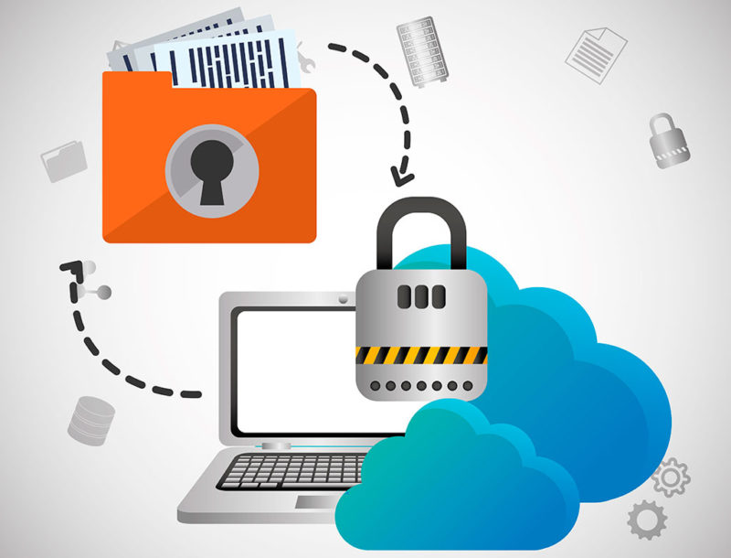
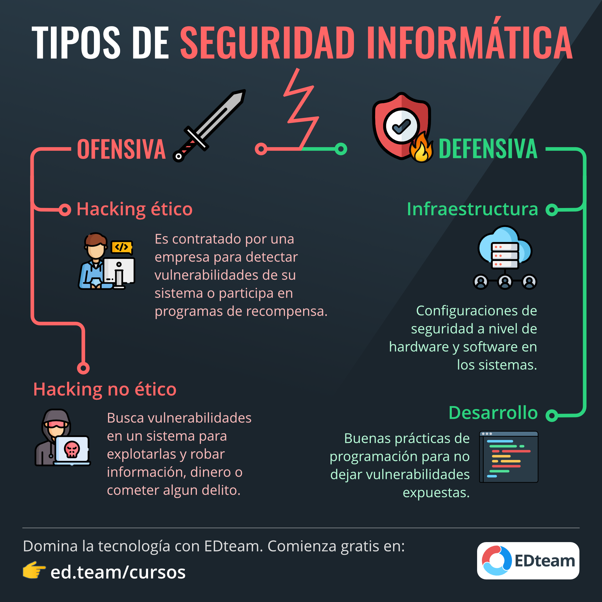
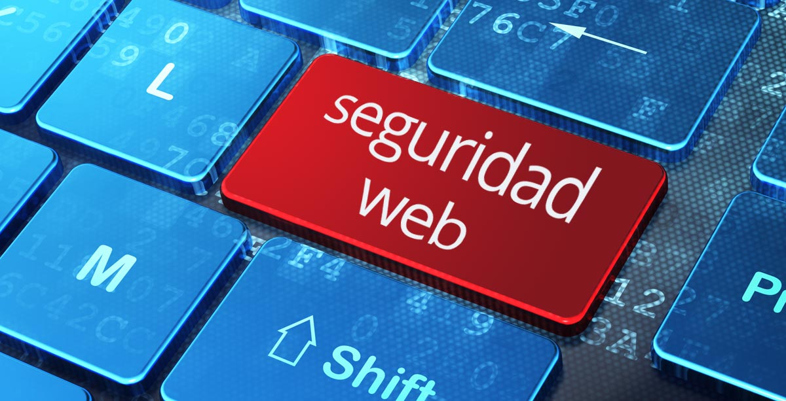
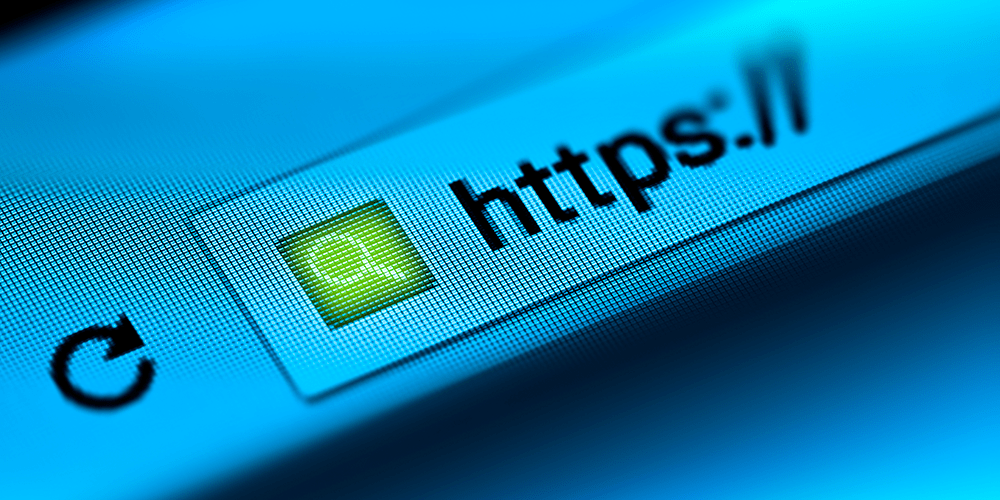
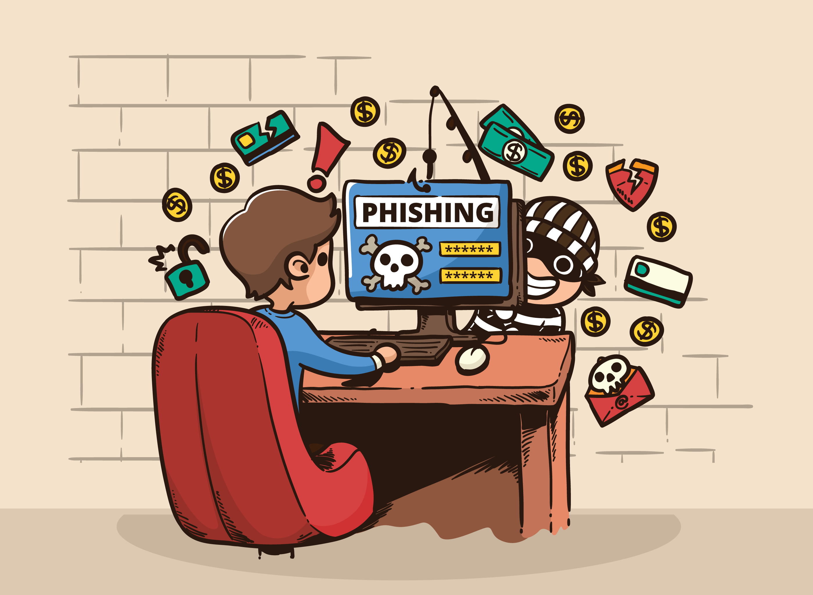

Consejos Generales de Seguridad
Mantener la seguridad en línea es fundamental en la era digital, donde dependemos cada vez más de internet para realizar diversas actividades. Aquí te presentamos una serie de consejos generales que te ayudarán a navegar por la web de manera más segura y protegida.
1. Contraseñas seguras y únicas: Utiliza contraseñas robustas que sean difíciles de adivinar, combinando letras mayúsculas y minúsculas, números y caracteres especiales. Además, nunca uses la misma contraseña para múltiples cuentas. Considera el uso de un administrador de contraseñas para gestionarlas de forma segura..
2. Mantén tu software actualizado: Asegúrate de que tu sistema operativo, navegadores web y aplicaciones estén siempre actualizados con las últimas versiones y parches de seguridad. Las actualizaciones suelen incluir correcciones para vulnerabilidades conocidas que podrían ser explotadas por hackers..
3. Navegación segura: Evita hacer clic en enlaces sospechosos o abrir archivos adjuntos de correos electrónicos desconocidos. Utiliza conexiones seguras (https://) al navegar por sitios web y evita ingresar información confidencial en sitios que no sean seguros..

4. Protección antivirus y antimalware: Instala y mantén actualizado un software antivirus confiable en todos tus dispositivos. Este tipo de programas puede detectar y eliminar amenazas de malware que podrían comprometer la seguridad de tus datos..
5. Conciencia y educación: Mantente informado sobre las últimas amenazas en línea y sé consciente de las prácticas de seguridad básicas. Capacita a ti mismo y a tu familia sobre cómo reconocer y evitar estafas en línea, phishing y otros ataques cibernéticos..
6. Configura alertas de actividad inusual: Configura notificaciones o alertas para recibir avisos sobre actividades inusuales en tus cuentas, como accesos desde ubicaciones desconocidas o intentos de inicio de sesión fallidos.
7. Privacidad en redes sociales: Revisa y ajusta la configuración de privacidad en tus cuentas de redes sociales para controlar quién puede ver tu información personal y tus publicaciones. Evita compartir demasiada información personal en línea y sé cauteloso al aceptar solicitudes de amistad o seguir a personas desconocidas..
8. Monitorización de actividad sospechosa: Mantente atento a cualquier actividad inusual en tus cuentas en línea, como accesos no autorizados o cambios en la configuración de seguridad. Configura alertas de seguridad si tu proveedor de servicios lo permite, y actúa rápidamente si notas algún comportamiento sospechoso para proteger tus cuentas..
9. Mantén la privacidad de tus dispositivos: Configura la privacidad en tus dispositivos móviles y computadoras para limitar el acceso de las aplicaciones a datos sensibles, como la ubicación o los contactos, y revisa periódicamente la configuración de privacidad para realizar ajustes según sea necesario.

Al seguir estos consejos adicionales, estarás mejor equipado para protegerte contra diversas amenazas en línea y mantener tus datos seguros en el mundo digital..